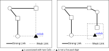
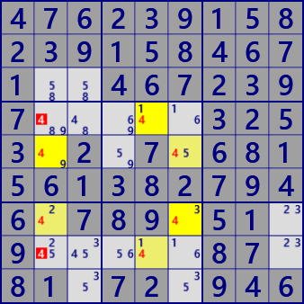
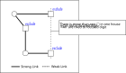
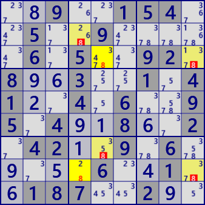
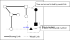
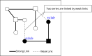

(multi) Coloring
Coloringは、着目数字を強いリンクでつなぐ解析アルゴリズムです。ここでは4タイプの(Multi)Coloringを示します。最初に実例を示します。
(1)Coloring Trap
着目数字を選択し、この数字の強いリンクで結ばれたセル群（これを"連"と名つけます）を交互に2つのグループに分けます。
次のイメージ図は、行・列・ブロックの強いリンクで結ばれたセル群をと□の2つのグループに分類しています。
グループに分ける操作を"セルに色をつけて塗り分ける"ことになぞらえて、Coloringと呼びます。リンク数は3以上、セル数は4以上が条件です。
この状態で、どちらかは決まっていませんが、一方のグループの全てのセルは着目数字であり、他方は着目数字ではありません。
このとき両方のグループ（と□）と同時に関係する(弱いリンクで繋がる）位置にあるセル（▲）は着目数字を候補に持つことはできません。
セル群はセル▲に対しLockedとなっています。左上の実例では、2つのグループを緑色の濃淡で表示しています。


Coloring Trap #4
group 1 : r4c5 r5c2 r7c6
group 2 : r5c6 r7c2 r8c5
exclude : r48c2#4
4....9.5.23..58.67...4.7.........3253.2....8.5.1...7.....89....9......7..1.72..46
(2)Coloring Wrap
着目数字を選択し、この数字の強いリンクで結ばれたセルセル群を交互に2つのグループに分けます。
これは(1)Trapと同じです。
このとき、一方のグループの複数のセルが同じHouseに属するとき、このグループの全セルの候補数字から着目数字を除外でき、
他方のセル群は着目数字に確定します。
なお、イメージ図は説明のために単純化していますが、強いリンクの繋がりは右上図のように複雑に連結していることもあります。
複雑に連結するのは、Trapでも同じように見られます。


Coloring Wrap #8
group 1 : r3c5 r8c4
group 2 : r2c4 r38c9 r7c5
exclude : r2c4#8 r38c9#8 r7c5#8
..9..154..5..9.....6.5..92.8..3..1.41..4.6..95.4..8..2.42..9.6.....6..1..187..2..
(3)MultiColoring Type1
Multi Colors Type1は、Trapの拡張です。着目数字を選択し、この数字の強いリンクで結ばれたセル群（連）を交互に2つのグループに分けます(塗り分けます)。
このColoringは途中で途切れることがあり、その場合は新しいセル群(連)として生成を繰り返します。
複数の連が生成できて、異なる連のセルが同じhouseに属している箇所を探します。この箇所は弱いリンク結ばれてるとします。
弱いリンクで接続する箇所の2つのセルは同時に着目数字になることはありません。
この状態で、弱いリンクで接続するセルとは反対の色を持つセル(それぞれの連にある)と同時に関係する(houseが同じ)位置にあるセル▲は着目数字を候補に持つことはできません。


MultiColoring Type1 #7
group 1-A: r1c5#7 r4c6#7
group 1-B: r4c8#7 r5c5#7
group 2-A: r5c3#7 r6c8#7 r8c2#7
group 2-B: r6c2#7 r7c1#7 r8c9#7
exclude : r1c19#7
..9..154..5..9.....6.5..92.8..3..1.41..4.6..95.4..8..2.42..9.6.....6..1..187..2..
(4)MultiColoring Type2
Multi Colors Type2も、Trapの別のタイプの拡張です。Coloringの方法はType1と同じです。
一方の連の同じ色のセル()が、他の連の両方の色のセル(□と)と弱いリンクで繋がっているとき、
全てのセルから着目数字は除外できて、全てのセル■は着目数字に確定します。


MultiColoring Type2 #7
group 1-A: r1c9#7
group 1-B: r6c9#7
group 2-A: r3c6#7 r4c2#7 r5c5#7
group 2-B: r1c5#7 r3c3#7 r4c6#7 r5c7#7
exclude : r1c5#7 r3c3#7 r4c6#7 r5c7#7
...6.8...6...9...529.....483.1...4.64..3.1..2...8.6....1.4.2.7..6.7.9.5.....8....